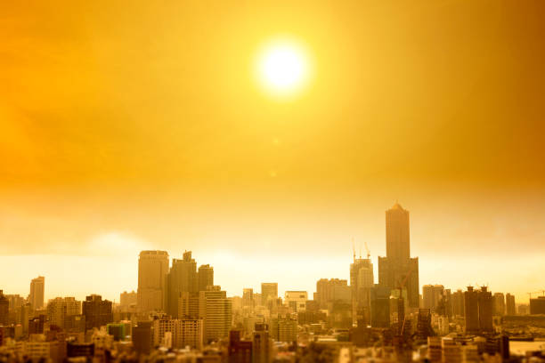
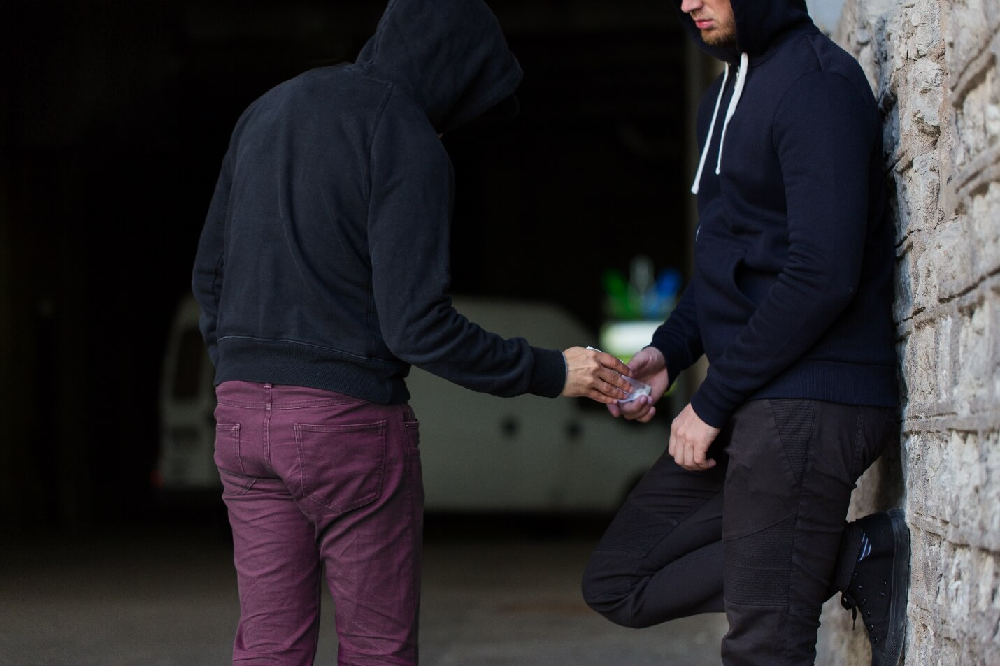

Edward stands up and walks out from the shade of the convience store that he relaxing at moments ago.
The heat is almost unbearable, but he knows that he must press forward.

Despite the fact that Edward knows his way around this city, his progress is incredibly slow, mostly due to
the high heat wafting all around. He trudges through the city for what seems like hours in the blistering sun
searching for anywhere he might find his favorite drink. He checks his watch to see that only thirty minutes had
actually passed. Angrily he looks up to the sky and yells. Collapsing on his knees he begins searching for another
place to rest. He glances around to see three men in a shaded alley. Curious as to what they are doing but also in
dire need of shade, he begins crawling over. Hiding at the corner before the alley, he sees what appears to be some
sort of drug deal. The three men look around nervously to see if anyone is watching, Edward is unseen around the
corner though. Once the coast appears to be clear, one man pulls three cans out of his pocket and hands them to the
two other men, who in return slip him their money.

Edward recognizes the cans though, they are none other than root beer he had been searching for. After seeing this display
he decides to wait a minute, and walk into the alley. Edward mentions that he saw what the man was selling. Immediately the man
becomes defensive but before he could do anything, Edward says that he wants some too. He walks up, meets the man, and hands
him the last bit of cash that he had on him. It would only be enough for one can, but that was enough for Edward. Finally he had
gotten his hands on what he had been craving all day. Filled with excitment, he walks out of the alley and immediately bump into
the Cola Cops.